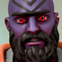

Hola, mi nombre es Woric Leatherbound, y soy un enano. También soy un librero errante.
Como enano, me gustan las cosas bien hechas. Como librero, me aseguro de que la historia de cualquier heroe esté disponible para quien la requiera. Como viajante recorro todos los caminos, grandes o pequeños, para conocer nuevos aventureros, heroes, familias y quienquiera que se pueda beneficiar de mis servicios.
Así que, nos vemos en el camino, aventurero.
Hola, mi nombre es Woric Leatherbound, y soy un enano. También soy un librero errante.
Como enano, me gustan las cosas bien hechas. Como librero, me aseguro de que la historia de cualquier heroe esté disponible para quien la requiera. Como viajante recorro todos los caminos, grandes o pequeños, para conocer nuevos aventureros, heroes, familias y quienquiera que se pueda beneficiar de mis servicios.
Así que, nos vemos en el camino, aventurero.
Aguanten los Dragones!
Vistazos al Archivo Infinito
Grimund Bronzeheart
Grimund Bronzeheart: un enano, demasiado pálido, pero aun así, un enano. Con 1,4m y 122kg es grande y pesado, incluso para los estándares de su raza. Su nariz, larga; su pelo blanco y su barba roja como el fuego. Cubre sus ojos lo mejor que puede con su capucha; son amarillos, rojizos quizas.
Li Zhu
Li Xue y Yang Baozhai eran originarios de Yumai, un pequeño pueblo en las montañas del este. Se ganaban la vida como pastores de cabras de montaña y vivían en una pequeña cabaña algo alejada del pueblo, en las tierras de Chen Qiang, un terrateniente amigo de Li Xue desde pequeños. La cabaña de los padres de Li Zhu era pequeña, por lo cual, durante las últimas semanas del embarazo Chen Qiang los invito a vivir a la casa principal, donde tendrían más espacio para el momento del nacimiento. Li Zhu nació durante la noche y su padre lo nombro así por la fuerza de los gritos del pequeño.

Dain Thundermaster
Dain fue el más joven de los 10 niños de Rangrim y Anbera, del clan Thundermaster. Dain fue el último varón en nacer de la treceava generación de Thundermasters, 15 años después de la rebelión de esclavos que separó al clan durante más de 100 años.